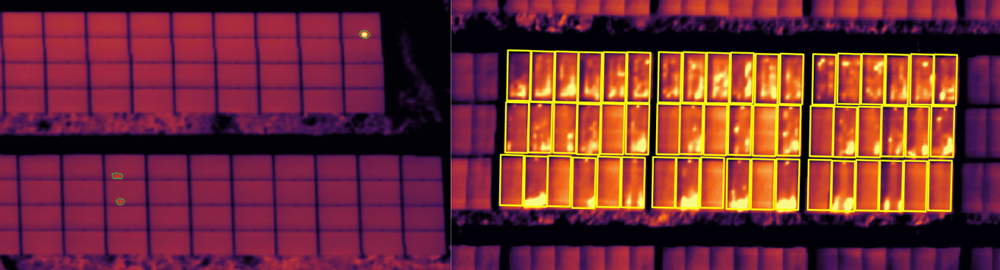

AI-based anomaly detection in PV power plants based on thermal imaging
Problem statement
Photovoltaic (PV) technology is one of the key-drivers of the transition towards a fully renewable-based energy system. However, current PV power plants use complex, highly customized monitoring systems that require high maintenance costs and a lot of manual intervention. As a result, numerous PV plants today operate without monitoring. The PV industry, therefore, needs a fully automated system that is able to detect anomalies, including hotspots, potential induced defects (PIDs) or issues on bypass substrings, diodes, strings or junction boxes. As many of these defects provoke an increase of temperature in the respective solar panel, it is useful to integrate infrared or thermal cameras to guide the detection system.
 Figure 1: Anomalies or defects on solar panels often manifest themselves by a local increase in temperature on the respective panel, e.g. hotspots (left) or PIDs (right). For that reason we use thermal imaging in this thesis to detect hotspots and other anomalies. As the root causes of those hotspots are often more clearly visible in RGB images (e.g. vegetation, droppings etc.), we combine thermal with RGB imaging.
Even though AI-based anomaly detection systems have shown their effectiveness, they still suffer from a lot of typical problems involving successful training of the system. For example, as some anomalies are rarely occurring, there is a lack of qualitative training data for those types. Moreover, as some defects appear more often than others, the AI system might suffer from class imbalance problems.
Goal
In this master thesis the student will develop high-performing deep learning algorithms for accurate recognition and classification of different PV fault “patterns” or anomalies from IR signatures of operating PV plants. The student will give extra attention to potential class imbalance problems, will experiment with data augmentation and make the training as robust as possible. In addition, he will explore semi-supervised learning strategies to cope with the lack of sufficient annotated training data.
This thesis has been conducted by Johannes Lootens (Johannes.Lootens@UGent.be).